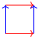
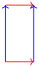
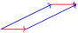

Explore the determinant simulation.
Math 2301 Day 11
Section 1 Determine It
Subsection 1.1 Matrix Inversion Review
Let’s find the inverse of the following matrix:
\begin{equation*}
\begin{pmatrix}
0 \amp 2 \amp 0 \amp 0 \\
1 \amp 0 \amp 0 \amp 0 \\
0 \amp 0 \amp 0 \amp 2 \\
0 \amp 0 \amp 1 \amp 0
\end{pmatrix}
\end{equation*}
Subsection 1.2 Areas and Volumes
Checkpoint 1.1.
Recall that two vectors starting at the origin span a parallelogram: their sum is its opposite vertex. For example, the vectors \((1,0)\) and \((0,1)\) span the following unit square.

The area of this square is \(1\text{.}\) The square corresponds to the matrix
\begin{equation*}
\begin{pmatrix}1 \amp 0 \\ 0 \amp 1\end{pmatrix},
\end{equation*}
where the rows are the spanning vectors. Let’s see how the area changes under elementary row operations.
First, swapping the two rows does not change the area, because the same two vectors span the same parallelogram. If we instead multiply the second row by \(2\text{,}\) we obtain the following rectangle.

We have doubled the height, so the area doubles. More generally, multiplying one row by a nonzero scalar \(\lambda\) multiplies the area by \(|\lambda|\text{.}\) The absolute value is essential: area cannot become negative.
The remaining row operation is row replacement. Let’s add twice the first row to the second. The resulting matrix is
\begin{equation*}
\begin{pmatrix}1 \amp 0 \\ 2 \amp 1\end{pmatrix}.
\end{equation*}
The corresponding parallelogram is shown below.

Although the parallelogram has been sheared, its base length and perpendicular height are unchanged. Therefore its area is unchanged.
These observations give a way to find the area of the parallelogram spanned by the rows of any \(2\times 2\) matrix
\begin{equation*}
A=\begin{pmatrix}a \amp b \\ c \amp d\end{pmatrix}.
\end{equation*}
Reduce \(A\) to reduced row echelon form while keeping track of row operations. Each row swap or row replacement leaves area unchanged; each multiplication of a row by \(\lambda\ne 0\) multiplies area by \(|\lambda|\text{.}\) If the result is the identity, the original area is
\begin{equation*}
\frac{1}{|\lambda_1\lambda_2\cdots\lambda_k|},
\end{equation*}
where \(\lambda_1,\ldots,\lambda_k\) are the scaling factors used in the reduction. If the reduced row echelon form is not the identity, the rows are linearly dependent and the area is \(0\text{.}\)
The same reasoning holds in higher dimensions. In dimension \(3\text{,}\) three vectors span a parallelepiped. In higher dimensions, the corresponding figures are called parallelotopes. Their volumes are the absolute values of a polynomial function of the matrix entries called the determinant, denoted \(\det(A)\text{.}\)
Because elementary row operations are represented by elementary matrices, and every invertible matrix is a product of elementary matrices, we obtain the multiplicative rule for volumes:
\begin{equation*}
|\det(AB)|=|\det(A)|\,|\det(B)|.
\end{equation*}
Subsection 1.3 The Determinant
The determinant is a signed version of volume. Its sign records orientation, a concept related to the right-hand rule in three dimensions and important in multivariable calculus.
For determinants, unlike unsigned area or volume, the order of rows matters. Interchanging two rows multiplies the determinant by \(-1\text{,}\) multiplying one row by \(\lambda\) multiplies the determinant by \(\lambda\text{,}\) and adding a multiple of one row to another leaves the determinant unchanged.
For example, subtracting the first row from the second and then swapping the two rows gives
\begin{equation*}
\det\begin{pmatrix}0 \amp 1 \\ 1 \amp 1\end{pmatrix}
=\det\begin{pmatrix}0 \amp 1 \\ 1 \amp 0\end{pmatrix}
=-\det\begin{pmatrix}1 \amp 0 \\ 0 \amp 1\end{pmatrix}
=-1.
\end{equation*}
There are explicit formulas for determinants, but row reduction is often more efficient for larger matrices, unless the matrix has a useful special structure. For a \(2\times 2\) matrix, the formula is
\begin{equation*}
\det\begin{pmatrix}a_{11} \amp a_{12} \\ a_{21} \amp a_{22}\end{pmatrix}
=a_{11}a_{22}-a_{12}a_{21}.
\end{equation*}
For \(3\times 3\) matrices, one can use cofactor expansion, discussed below. A related formal determinant mnemonic also appears when computing cross products.
Theorem 1.5.
An \(n\times n\) matrix is invertible if and only if its determinant is nonzero.
Subsection 1.4 Cofactor Expansion and Inversion
There is an explicit formula for the inverse of an invertible matrix. For an \(n\times n\) matrix \(A\) (with \(n\ge 2\)), let \(C\) be its cofactor matrix, with entries
\begin{equation*}
C_{ij}=(-1)^{i+j}\det(A_{ij}),
\end{equation*}
where \(A_{ij}\) is the \((n-1)\times(n-1)\) submatrix obtained by deleting row \(i\) and column \(j\) of \(A\text{.}\)
Theorem 1.6 Cofactor Expansion.
Expanding along the first row gives the recursive formula
\begin{equation*}
\det(A)=\sum_{j=1}^{n}a_{1j}C_{1j}.
\end{equation*}
The cofactor matrix also provides an explicit formula for the inverse.
Theorem 1.7.
If \(A\) is invertible, then
\begin{equation*}
A^{-1}=\frac{1}{\det(A)}C^{\mathsf{T}}.
\end{equation*}
The transpose \(C^{\mathsf{T}}\) of the cofactor matrix is called the adjugate of \(A\text{,}\) denoted \(\operatorname{adj}(A)\text{.}\)
Subsection 1.5 Exercises
Checkpoint 1.8.
Compute the determinant of each matrix.
-
\begin{equation*} \begin{pmatrix}1 \amp 3 \\ 5 \amp 7\end{pmatrix} \end{equation*}
-
\begin{equation*} \begin{pmatrix}1 \amp 1 \amp 0 \\ 1 \amp 0 \amp 1 \\ 0 \amp 1 \amp 1\end{pmatrix} \end{equation*}
-
\begin{equation*} \begin{pmatrix}\cos\theta \amp -\sin\theta \\ \sin\theta \amp \cos\theta\end{pmatrix} \end{equation*}
Checkpoint 1.9.
Find the adjugate of the following matrix:
\begin{equation*}
\begin{pmatrix}1 \amp 1 \amp 0 \\ 1 \amp 0 \amp 1 \\ 0 \amp 1 \amp 1\end{pmatrix}.
\end{equation*}
Checkpoint 1.10.
Find the area of the parallelogram with vertices
\begin{equation*}
(1,0),\quad (1,1),\quad (2,3),\quad (2,4).
\end{equation*}
The area of a triangle is one-half the area of the parallelogram spanned by two edge vectors from the same vertex. In dimension \(3\text{,}\) the volume of a tetrahedron is one-sixth the volume of the parallelepiped spanned by three such edge vectors.
More generally, for a \(d\)-dimensional simplex with vertices \(v_0,v_1,\ldots,v_d\) in \(\mathbb{R}^d\text{,}\) its \(d\)-dimensional volume is
\begin{equation*}
\operatorname{Vol}=\frac{1}{d!}|\det(A)|,
\end{equation*}
where \(A\) is the \(d\times d\) matrix whose rows are the edge vectors \(v_1-v_0,\ldots,v_d-v_0\text{.}\) In dimension \(3\text{,}\) a simplex is a tetrahedron.
Checkpoint 1.11.
Find the volume of the tetrahedron with vertices
\begin{equation*}
(0,0,0),\quad(1,0,0),\quad(1,1,0),\quad(1,1,1).
\end{equation*}
![Runestone Academy logo]()
![MathJax logo]()